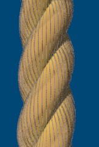
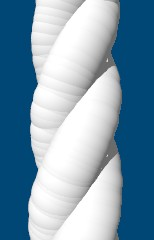

POV-Ray Object Collection
|
Rope can be quite tricky to model because of the shape of the helixes, the complex paths that you might want those helixes to follow and the complexity of aligning appropriate textures to those forms. It can also be difficult getting the rope to fit in with, and potentially interact with other elements in your scene. This set of macros attempts to address those difficulties, but can't necessarily solve them all. At the end of this section is a list of common problems and advice intended to help you circumvent them.
In its simplest form you can add a rope to your scene file by including the "Rope.inc" file and simply calling the 'Rope' macro.
Normally you will wish to explicitly define the path that your rope is to follow (the default path won't keep you entertained for very long). To specify a path you just need to define a spline called 'Rope_CentreSpline' before calling the 'Rope' macro. You can do this by hand if you want (or by using one of a number of spline editing tools compatible with POV_Ray), alternatively you may wish to use the macros described below to simplify this task. The following example illustrates how to define your own spline. You can use any valid spline type, but the 'quadratic_spline' and the 'natural_spline' options usually produce the most realistic results:
Sophisticated paths can be defined by progressively adding points into an array of coordinates called 'Rope_Array' and then using the 'Rope_ArrayToSpline' macro to generate the spline required by the 'Rope' macro. Alternatively the 'Rope_ArrayToRope' macro provides a shorthand for calling these two macros and supports a few extra features that are described below. A set of macros is provided to help build up this array of points, inserting knots, loops and coils etc.
The following example first adds two coordinates into the path that the rope will follow (the array is automatically initiated by the first macro call). A simple overhand knot is added into the middle of the rope and a further point is added to the far end of the rope before the 'Rope_ArrayToSpline' macro is called to generate the 'Rope_Spline' spline. That spline is then used by the 'Rope' macro to draw a simple brown rope with a knot in the middle.
You can control the settings used to generate the style and dimensions of the rope using a combination of macro parameters and control variables that need to be set before the macros are called. One control variable of particular interest is 'Rope_ShowFibres', which by default is set to '1'. Setting this to '0' can reduce render times by a factor of 10 and, although the quality of the rope is affected, it is still usually good enough for test renders.
When creating your scene you will need to use identifiers with the prefix src="rope_" to refer to the identifiers defined in this document, but you should avoid using this prefix for anything else that you add to your scene. By reserving this prefix for the Rope macros it should be possible for you to download any future versions without your identifiers clashing with names used by those future versions of these macros.
Various examples at varying levels of sophistication are provided in the file 'rope.pov'. You'll see that it adopts this policy; using variable names, texture names etc. that are prefixed with src="rope_" to refer to identifiers that form part of the Rope macros. Identifiers that don't start with the src="rope_" prefix are used for everything else.
Dimensions are specified in metres. The ScaleConvert macro from the POV-Ray Object Collection can be used to convert between different units of measure.
Spline OverrunsIf you create a spline with widely-spaced points leading into tightly spaced points (e.g. where a long length of rope leads into a knot), the spline may extend beyond the points you've defined creating a spurious loop or a fold that creates an unwanted extra protrusion of rope. When constructing a path using the 'Rope_Array' array you can call the 'Rope_BreakSpline' macro at any time to register a break in the spline.The 'Rope_ArrayToRope' macro looks for such breaks and constructs a rope using multiple splines, potentially of different spline types, that are separated at those points. This solves the overrun problem, but may create a very angular bend. You may be able to smooth these junctions by adding a couple of extra points in line with the long run of rope after the new break point. Note that the Rope_ArrayToSpline macro ignores these break points and only creates a single spline. Example 40 in 'rope.pov' illustrates the use of the 'Rope_BreakSpline' macro.
| |
Knot OrientationKnots are conventionally oriented based upon the direction of the rope leading into the knot when you call the knot macro. Sometimes this won't be what you want. To change the orientation you can adjust the orientation vectors before calling the knot macro. The macro should then reorient the knot accordingly. Mostly you'll want to change the setting for 'Rope_ArrayAheadVector', but you may also wish to alter 'Rope_ArrayUpVector'. The setting for 'Rope_ArrayAheadVector' takes precedence and the macros adjust 'Rope_ArrayUpVector' to be at right angles to it.Example 6 in 'rope.pov' illustrates adjusting the setting of 'Rope_ArrayUpVector'.
| |
Inherited CharacteristicsIf you add more than one rope to a scene you may find that the default settings from the first rope are inherited by the second rope. For example, If the first rope is braided the default setting for the 'Rope_TwistRatio' variable will be set to 2. If you then wish to create a helical rope the macros will take this setting when you call them the second time, assuming that you've set this value yourself.To avoid this sort of problem you can call the Rope_Undef macro before starting to define the second rope. This clears down all of the variables so that they take their default values when the various Rope macros are next called. For example the 'Rope_TwistRatio' variable will then be set to 3 for the second rope, because that is the default for helical ropes.
|
The top row of images shows rope generated with 'Rope_ShowFibres' set to '1' whereas the lower set shows rope generated with 'Rope_ShowFibres' set to '0'.
|  | ||||
|  | ||||
| ""(Default) | "Brown" | "Left Helix Brown" | "White" | "Cyan" |
|
||||||
|
|
|||||
| "Brown Braided" | "Gold Braided" | "Patchwork" | "Soft Yellow Braided" | "Red Knobbly" | "Loose Gold Braid" | "Cyan Braided" |
You don't have to use one of these predefined styles. There are plenty of options for controlling the style of the rope generated by these macros. You can also easily add new styles (see below).
|
Rope_AddPoint
This macro adds a single point into the array at the coordinate specified as a parameter to the macro call. For example Rope_AddPoint(<0,1,2>). | |
|
Rope_SlackSegment and Rope_Catenary
These macros both add a loose segment of rope from the current point to the point specified. The 'Rope_SlackSegment' macro uses a very approximate algorithm to add a segment of roughly a given length. For example Rope_SlackSegment(<0,1,2>,3) extends the rope to coordinate <0,1,2> adding approximately 3 metres of rope to reach that point. The 'Rope_Catenary' macro adds a catenary, which is the path that a chain or cable hanging under its own weight follows. Long lengths of rope typically follow such a path quite closely, although for shorter lengths the internal forces passed along the rope often cause the rope to deviate from a catenary shape. See example 4 in 'rope.pov'. This superimposes results from the 'Rope_SlackSegment' macro (the thin brown rope) and the 'Rope_Catenary' macro (the thicker blue rope). | |
|
Rope_FindEdge and Rope_FindEdgeFromCentre
These macros don't add a point into the rope's path, but find and return a point on the edge of an object. The returned coordinates can be passed straight into the 'Rope_AddPoint' macro or the 'Rope_SlackSegment' macro to add the point into the path. The Rope_FindEdge macro finds a point that is in line with the current direction of the rope. The Rope_FindEdgeFromCentre macro finds a point on the top edge of an object that leads the rope towards the horizontal centre of that object. See example 15 in 'rope.pov'. | |
|
Rope_TrackOver
This macro adds a length of rope that runs over the top surface of an object until it reaches the object's far edge. See example 16 in 'rope.pov'. | |
|
Rope_OverhandKnot
This macro adds a single overhand knot at the current point. See example 2 in 'rope.pov'. | |
|
Rope_FigureOfEight
This macro adds a figure of eight knot at the current point. See example 3 in 'rope.pov'. | |
|
Rope_CloveHitch
This macro adds a clove hitch at the current point. See example 8 in 'rope.pov'. | |
|
Rope_Spiral
This macro can add a variety of different types of spiral. The 'coil' example shown here uses two calls to the macro. The first adds a little helix made up using two coils of rope in the middle, spiraling downwards. The second macro call adds the outward spiral (both macro calls use the default amount of randomness). The 'helix' example sets 'Rope_UpDispPerCoil' to '0' and 'Rope_RightDispPerCoil' to '-1' to form a helix that coils down and to the left of the starting point by one rope thickness per turn. See examples 14 and 17 in 'rope.pov'. | |
|
Rope_Binding
This macro adds a thin cylindrical binding to the ends of a rope. Note that these bindings are separate objects abutted onto the ends of the rope object. They do not form part of the rope object whose path is constructed using the macros which manipulate 'Rope_Array'. It needs to be called after either the 'Rope' macro or the Rope_ArrayToRope macro and returns a single, separate, CSG (Constructive Solid Geometry) object that aligns with one or both ends of the rope already created. See example 18 in 'rope.pov'. |  |
The following macros can add multi-part knots or can be used to join two lengths of rope. You would typically call them twice, once with a parameter of '1' to draw the first part of the knot at the current location and a second time with a parameter of '2' to complete the knot. When you call it the second time it adds a length of rope leading from the current position back to where it needs to be to complete the knot and then adds the second part of the knot.
Most of these macros also allow you to specify a parameter of '0', at which point it will add the complete knot with a fairly arbitrary loop of rope joining the end of the first part to the start of the second part.
|
Rope_ReefKnot
This macro adds a reef knot at the current location. See examples 5, 6 and 7 in 'rope.pov'. | |
|
Rope_RoundTurnAndTwoHalfHitches
This macro adds a round turn and two half hitches at the current location (see examples 9 in 'rope.pov'). If you call this macro in two halves then it only ties the two half hitches and you can do whatever you want in between, as is illustrated by example 12 in 'rope.pov'. | |
|
Rope_Bowline
This macro adds a bow line at the current location. See example 10 in 'rope.pov'. | |
|
Rope_DutchBowline
This macro adds a Dutch marine bowline (a cowboy bowline) at the current location. See example 11 in 'rope.pov'. |
|
Example 40
Example 40 in 'rope.pov' adds a simple knot at the start of the rope, then passes a sequence of loose segments of rope between a set of posts to create a simple rope fence. The path of the rope is built up using the Rope_AddPoint and Rope_OverhandKnot macros, then the Rope_SlackSegment macro is called from within a '#while' loop to join the posts leading away from the camera in the scene on the right. A second loop is used to join the remaining posts. The Rope_BreakSpline macro is called after the knot is defined and again at the sharp corner between the two rows of posts to avoid spurious spline shapes. The Rope_ArrayToRope macro is used at the end of this example to add the rope to the scene. It creates a single rope constructed using 3 splines, with one spline for the knot (and the points before it), one for the rope joining the first row of posts and one joining the second row of posts. | |
|
Example 41
Example 41 in 'rope.pov' constructs a simple climbing frame with a rope ladder and a short climbing rope. The rope ladder is constructed using the Rope_AddPoint and Rope_OverhandKnot macros in a '#while' loop. The rungs of the ladder are added into the scene in the same '#while' loop making it straight-forward to keep the rope and the rungs aligned. The top knot is defined using the Rope_RoundTurnAndTwoHalfHitches macro. The rope object is generated using the Rope_ArrayToRope macro and is added to the scene twice to form the two sides of the rope ladder. When the ladder is finished the Rope_Undef macro is called to clear down settings from the first rope definition so that the second rope doesn't accidentally 'inherit' any settings. The knots at the bottom and top of the climbing rope are defined using the Rope_ReefKnot and Rope_Bowline macros. |
If you plan to keep your new styles to yourself, you should add a macro called 'StandardStyles' that has a single parameter called 'Style' either into your scene file or into a separate include file. By keeping your definitions separate in this way you'll be able to easily download future versions of the Rope macro files without overwriting your changes. You should avoid adding new identifiers with the 'Rope_' prefix as this prefix is reserved. You can add new identifiers with any other name you choose.
If you intend to incorporate your new styles back into the Object Collection you can add them directly into the 'Rope_StandardStyles' macro at the top of the 'rope.inc' file, taking care not to overwrite them if you download a new copy from the Object Collection before you have submitted your updates. All identifiers (macro names, variables etc.) should start with the prefix 'Rope_' and be followed by a suitably descriptive name.
Both the 'Rope_StandardStyles' macro and any 'StandardStyles' macro that you define should consist of a single #switch statement with a #case statement for each of the named styles you want to define. You can add as many new styles/case statements as you like. Each case statement contains a mixture of declarations of variables, colors, textures, normal etc. as required to override the default settings used to control the style of a rope. You can copy any of the existing styles as a starting point or start with the default settings, adding declarations as required. The available settings are documented in the 'Variables' section of this document.
If you plan to keep your new macro to yourself, you can call it whatever you want so long as it doesn't start 'Rope_'. You can add it into your scene file or into a separate include file, but you should not add it into the 'rope.inc' file. This is so that you'll be able to easily download future versions of the macro Rope files without overwriting your changes.
If you intend to incorporate your new macro into the POV_Ray Object Collection you should call it 'Rope_' followed by the name of your new shape. Any other identifiers that you use in your new macro should also use the same prefix. It's probably best to create a separate include file for your macros, but you should copy them into 'rope.inc' if you want to upload a new version directly onto the POV-Ray Object Collection.
If you look at the 'Rope_OverhandKnot' macro you'll see that it adds points to the 'Rope_Array' array by making a series of calls to the 'Rope_ArrayDisplacement' macro. In general a knot macro finds a new point in space by adding 3D displacements to the current point (the last point that was defined in the 'Rope_Array' array). The first thing the 'Rope_OverhandKnot' macro therefore does is to call the Rope_InitializeKnot macro which makes sure that the array exists and has at least one point in it.
The Rope_InitializeKnot macro takes two parameters which are generally '0' and '1' for simple shapes (see the macro description for an explanation of these parameters).
The 3 displacements passed to the 'Rope_ArrayDisplacement' macro are relative to the current orientation of the rope which usually remains constant throughout the process of defining a knot. Often you won't need to change this orientation until the end of your macro when you'll need to incorporate some standard code to set them ready for the next macro to use. The orientation is held in 3 vectors: 'Rope_ArrayAheadVector', 'Rope_ArrayUpVector' and 'Rope_ArrayRightVector', but the 'Rope_ArrayDisplacement' macro takes account of these settings, so you often don't need to do much with them when writing your own knot macros. You just need to be conscious that the parameters you specify are relative to these vectors. These vectors need to be kept at right angles to each other, which is what the last two lines of a typical knot macro do:
Distances specified with the 'Rope_ArrayDisplacement' macro are specified as multiples of the rope thickness. You just specify a number and the macro automatically multiplies the value by the rope thickness (ie 1 = 2xRope_Radius). This enables all of the knots to automatically adjust to different thicknesses of rope.
The 'Rope_ArrayDisplacement' macro also multiplies distances by the 'Rope_KnotLooseness' variable, so you define the path through the knot so that the knot is reasonably tight and anyone using the macro can increase or reduce the tightness a bit by adjusting the 'Rope_KnotLooseness' variable (which defaults to 1).
The 'Rope_ArrayDisplacement' macro multiplies the value for the right vector by the 'Rope_KnotHandedness' variable which can be set to either '1' or '-1' so that anyone using the knot can easily reverse the handedness of the knot.
A simple knot macro is therefore mostly just a series of calls to the 'Rope_ArrayDisplacement' macro to add new points into the 'Rope_Array' array at the specified displacements from the previous position. A typical call to the 'Rope_ArrayDisplacement' macro may therefore be:
For simple knots the vectors don't need to be changed from the start of the knot to the end of the definition of that knot, so the displacements are simply specified relative to the orientation that was current when the knot macro was called.
In order to get the two halves of the knot correctly aligned, the first macro call stores away the start position and orientation that the second macro call will need to use to complete the knot. It does this by adding entries into the 'Rope_HalfKnotList' array. Following this first macro call the rope can be trailed around the scene and, when ready to complete the knot, the macro can be called a second time with a parameter of '2'. The macro can return the rope to the right place and orient the path correctly using the information stored by the first macro call so that the two halves of the knot marry up.
If you look at the 'Rope_Bowline' macro you'll see that the first call to the macro adds a single position and two orientation vectors to the 'Rope_HalfKnotList' array. Generally the orientation vectors will be identical to the orientation you used to define the first part of the knot, so the only tricky bit is in working out the position for the start of the second part of the knot. This is an absolute position in POV-Ray units, so you need to take account of the current rope thickness, orientation and handedness settings. You may find it easiest to just copy the lines of code that do this from the 'Rope_Bowline' macro and then set the numeric values with a certain amount of trial and error (keeping enough coffee to hand).
On the other hand it's not compulsory to keep the orientation vectors for the second half of the knot identical to those used for the first half of the knot. If there's some other setting that's more convenient you can use that. For example, the 'Rope_ReefKnot' macro reverses 'Rope_ArrayAheadVector' then just adds a mirror image of the first half to create the second half of the knot.
By convention, multi-part knot macros such as the 'Rope_Bowline' macro also support a '0' parameter to specify that the knot should be created in a single pass, in which case the end coming out of the first half of the knot is looped around to the starting point for the second half of the knot.
Knot macros that can build knots in two parts need to increment and decrement the 'Rope_HalfKnotIndex' variable which serves as an index to the 'Rope_HalfKnotList' array. The general assumption that you should make when writing a macro is that the most recently half-tied knot will be the first to be completed, so, by default the macro should use the half-knot list as a sort of LIFO (Last In First Out) stack. But also be aware that this index can optionally be managed from within the scene file, overriding this default behaviour.
| Rope.inc | The main include file containing the Rope macros. | |
|---|---|---|
| Rope.pov | A scene file illustrating the use of the Rope macros to generate a range of different examples. | |
| Rope.html | This document. | |
There are 3 automatically generated text files that contain a description, keywords for the search engine and any prerequisites registered against the version you downloaded. Although the file names start with the prefix "rope_", you shouldn't try to upload these files with the rest of the files. You may however edit these files before performing an upload so that you can pull the contents into the relevant text fields on the submission screen. This avoids you having to type in large amounts of text while submitting your new version.
Most of the files included with the Rope macros are sample images and documentation files. If you don't wish to distribute all of these files you only need to include a copy of the file 'Rope.inc' or a cut-down version of it.
If you plan to submit your object to the POV-Ray Object Collection at http://lib.povray.org/ you will need to rename the files to conform to the naming standards (All files from your submission will need the same unique prefix).
Rope macro
Rope_AddPoint macro
Rope_AddPositionMarker macro
Rope_AdjustVectors macro
Rope_ArrayDisplacement macro
Rope_ArrayToRope macro
Rope_ArrayToSpline macro
Rope_Binding macro
Rope_Bowline macro
Rope_BreakSpline macro
Rope_Catenary macro
Rope_CloveHitch macro
Rope_Defaults macro
Rope_DutchBowline macro
Rope_FigureOfEight macro
Rope_FindEdge macro
Rope_FindEdgeFromCentre macro
Rope_InitializeKnot macro
Rope_Noose macro
Rope_OverhandKnot macro
Rope_ReefKnot macro
Rope_RoundTurnAndTwoHalfHitches macro
Rope_SlackSegment macro
Rope_Spiral macro
Rope_StandardStyles macro
Rope_TrackOver macro
Rope_Undef macro
| Rope macro | |||||
|---|---|---|---|---|---|
|
The Rope macro adds a length of rope to your scene that follows the path defined by the spline called 'Rope_CentreSpline'.
This macro has 1 parameter:
| |||||
| Rope_ArrayToSpline macro | |||||
|
This macro can be used to help define a spline suitable for use with the Rope macro, based upon a set of coordinates contained within the 'Rope_Array' array. If you wish to simply define your own spline you won't need this macro or the array. On the other hand, if you want to build up a rope shape using the various shape definition macros provided with this distribution you will need this macro, because they each add points to the 'Rope_Array' array rather than manipulating the 'Rope_CentreSpline' spline directly.
You may also find it convenient to use this macro to create a spline for your own purposes. For example to define a sphere sweep to represent a power cable running up onto a desk. This macro has 1 parameter:
| |||||
| Rope_ArrayToRope macro | |||||
This macro takes an array of points and creates a rope that follows the path defined by those points. In the simplest case it just calls the 'Rope_ArrayToSpline' macro followed by the Rope macro, but it can also handle more complex assemblies where a single rope is constructed using a succession of splines. This helps to resolve a couple of difficulties:
This macro has 1 parameter:
| |||||
| Rope_Binding macro | |||||
|
This macro adds a cylindrical object onto the end of a rope (that needs to have already been generated) to represent the sort of twine binding typically used to stop the ends of the rope from fraying. You can control the construction of the binding by overriding the default settings for the Rope_BindingLength, Rope_BindingRadius and Rope_BindingThreadRadius variables.
This macro has 1 parameter:
| |||||
| Rope_BreakSpline macro | |||||
|
This macro adds a marker into the 'Rope_SplineTypeList' array to tell the 'Rope_ArrayToRope' macro where to break a spline into multiple sections, each potentially with a different spline type. A "natural_spline" works best in many circumstances and is the default, but other spline types may work better in specific circumstances. For example, when wrapping a rope around a sharp edged object a "linear_spline" may be more appropriate for that segment of the rope.
Introducing a break stops one spline and starts another. This can be used to prevents overruns that sometimes occur where spline points are spaced unevenly, but can result in unnaturally sharp bends in the rope if the starting direction of one spline doesn't line up with the end of the previous spline. This macro has 1 parameter:
| |||||
| Rope_AddPoint macro | |||||
|
This macro adds a coordinate to the 'Rope_Array' array.
This macro has 1 parameter:
| |||||
| Rope_SlackSegment macro | |||||
|
This macro adds a loose length of rope to the 'Rope_Array' array connecting the current point with a given coordinate. Two points are added to the array. The second point uses the coordinate specified, the first point is somewhere below the straight line between the current point and the specified coordinate, at a height intended to give a drooping length of rope that has approximately the required length.
If this macro doesn't add the new calculated position exactly where you want it, you can use the debug statement at the end of the macro to display the calculated position into the message stream and subsequently use the 'Rope_AddPoint' instead to add a point that is better positioned for your purposes. This macro has 2 parameters:
| |||||
| Rope_Catenary macro | |||||
|
This macro adds a loose length of rope to the 'Rope_Array' array connecting the current point with a given coordinate. Twenty one points are added to the array. The end point uses the coordinate specified, the points in between follow the shape of a catenary connecting the two points.
A catenary follows the path of a chain or cable hanging under its own weight. Long lengths of rope typically follow such a path, although for shorter lengths the internal forces passed along the rope usually cause the rope to deviate from a catenary shape.
The shape of a catenary is a function of the horizontal forces applied to the ends of the rope or chain (the horizontal component of the tension) and the weight per unit length of the material from which the rope or chain is produced. The ratio between these two factors is commonly referred to as 'a'. The Rope_Catenary_a variable can be set before calling the 'Rope_Catenary' macro to control this value, with higher values giving a more taught rope and lower values giving more sag. This value defaults to '1', giving a quite taught rope. For a description of how this macro works, see Caternaries below (and the macro itself in 'rope.inc'). This macro has 1 parameter:
| |||||
| Rope_OverhandKnot macro | |||||
| This macro adds 8 points to the 'Rope_Array' array that follow the path of a simple knot tied in the rope. It has no parameters. | |||||
| Rope_FigureOfEight macro | |||||
| This macro adds 12 points to the 'Rope_Array' array that follow the path of a figure of eight knot tied in the rope. It has no parameters. | |||||
| Rope_CloveHitch macro | |||||
| This macro adds 13 points to the 'Rope_Array' array that follow the path of a clove hitch. It has no parameters. | |||||
| Rope_Spiral macro | |||||
|
This macro adds points to the 'Rope_Array' array to follow the path of a spiral of rope. Starting at the current position the spiral moves forward and down around a 'central' point using the orientation vectors 'Rope_ArrayAheadVector', 'Rope_ArrayUpVector' and 'Rope_ArrayRightVector' to control the direction of the spiral. These orientation vectors are relative to the 'ahead' direction of the rope at the time the macro is called and usually don't align with the standard x,y and z axes.
You may need to set 'Rope_ArrayUpVector' before calling the 'Rope_Spiral' macro to orientate the spiral if you find that it is not initially added at the orientation you require. You can use the standard POV-Ray vaxis_rotate function to rotate 'Rope_ArrayUpVector' around 'Rope_ArrayAheadVector' by a desired amount, specified in degrees.
#declare Rope_ArrayUpVector = vaxis_rotate(Rope_ArrayUpVector,Rope_ArrayAheadVector,30);
This twists the up vector 30 degrees around the ahead vector.
The central axis of the spiral is determined based on the value of 'Rope_CentreDisplacement' which defines a distance in terms of multiples of rope thicknesses that the centre is 'below' the starting position relative to 'Rope_ArrayUpVector'. The radius of the spiral can be increased or decreased by a specified amount for each complete turn using 'Rope_UpDispPerCoil', which is specified as multiples of the rope thickness. The rope can also be made to extend to the left or right by a fixed amount per complete turn using 'Rope_RightDispPerCoil', which is also specified as multiples of the rope thickness. The number of points added is determined by the product of the 'Rope_Coils' variable (default value = 3) and the 'Rope_PointsPerCoil' variable (default value = 5.3). The radius of the helix is defined using the 'Rope_PoleRadius' variable (default value = 0.03). This macro responds to the setting of 'Rope_KnotRandomization', which uses the random number stream 'Rope_RandomStream' to add an amount of randomisation to the positions of the points that it adds to the path of the rope. The default randomisation is 0.3. You can increase this value or decrease it to '0' to remove randomisation. This macro has no parameters. | |||||
| Rope_Noose macro | |||||
This macro adds points to the 'Rope_Array' array that follow the path of a noose tied in the rope. The number of points depends on the number of coils in the rope (14+5*No of coils). This can be done in a single pass or with two passes.
It has 1 parameter:
| |||||
| Rope_ReefKnot macro | |||||
This macro adds 20 points to the 'Rope_Array' array that follow the path of a reef knot tied in the rope (25 if the two halves are joined). This is usually done in two passes, creating one half of the knot (10 points) with the first macro call and completing it with a second macro call. This is because a reef knot is usually used to tie two sections of rope together.
It has 1 parameter:
| |||||
| Rope_RoundTurnAndTwoHalfHitches macro | |||||
|
This macro adds points to the 'Rope_Array' array that follow the path of a round turn and two half hitches tied in the rope. This can be done in two passes, creating the first part of the knot (just a straight line) with the first macro call adding 1 point, completing the knot with a second macro call that adds the two hitches, using 13 points generated by the 'Rope_CloveHitch' macro.
This macro only actually adds the round turn part of the knot if the complete knot is generated in a single pass. Otherwise you are free to take the rope wherever you want in the scene between the first half and the second half of the knot. To add your own turns you can call the 'Rope_Spiral' macro, specifying the number of turns you want to add. If the 'Rope_RoundTurnAndTwoHalfHitches' macro is called with a parameter of '0' the standard round turns are added by setting 'Rope_Coils' to 1.55. This macro has 1 parameter:
| |||||
| Rope_Bowline macro | |||||
|
This macro adds 16 points to the 'Rope_Array' array that follow the path of a bowline tied in the rope (18 if the two halves are joined). This is usually done in two passes, creating the first part of the knot (just a twist in the rope) with the first macro call adding 7 points and completing it with a second macro call that adds the rest of the knot, using 9 points.
This is similar to 'Rope_DutchBowline' (Dutch Marine Bowline or Cowboy Bowline) except that the final loop is reversed. It has 1 parameter:
| |||||
| Rope_DutchBowline macro | |||||
|
This macro adds 16 points to the 'Rope_Array' array that follow the path of a Dutch Marine Bowline or Cowboy Bowline tied in the rope (18 if the two halves are joined). This is usually done in two passes, creating the first part of the knot (just a twist in the rope) with the first macro call adding 7 points and completing it with a second macro call that adds the rest of the knot, using 9 points.
This is similar to 'Rope_Bowline' except that the final loop is reversed. It has 1 parameter:
| |||||
| Rope_FindEdge macro | |||||
This macro is used to find a point on an object that is inline with the current ahead direction so that the rope can be trailed over that edge. This doesn't add the point into the 'Rope_Array' array, it just returns the coordinates.
It has 1 parameter:
| |||||
| Rope_FindEdgeFromCentre macro | |||||
This macro is used to find a point on the leading edge of an object that is in the direction of the centre of the object from the current location.
This doesn't add the point into the 'Rope_Array' array, it just returns the coordinates.
It has 1 parameter:
| |||||
| Rope_TrackOver macro | |||||
This macro is used to add a series of points to the 'Rope_Array' array, taking the path of the rope over the top of an object in the direction of the ahead vector.
It has 1 parameter:
| |||||
| Rope_Undef macro | |||||
| This macro resets key control variables so that they can revert to default values. | |||||
The following macros are used by the macros listed above. You won't normally need to call any of these macros directly from your scene file, but you may find some of them useful, particularly if you want to add your own macros to generate new knots and other rope shapes.
| Rope_StandardStyles macro | |||||||
|---|---|---|---|---|---|---|---|
This macro interprets the style specified on the Rope macro call into a set of variable settings to generate a rope that corresponds to the named style. You don't normally need to call this macro directly.
This macro has 1 parameter:
| |||||||
| Rope_Defaults macro | |||||||
| This macro contains the default settings and textures used by the Rope macro when generating a rope. You don't usually need to call this macro because it is called by the 'Rope' macro and by the 'Rope_ArrayToRope' macro as required. To override the defaults set by this macro you can simply set values in your scene file before calling the 'Rope' macro and your settings will take precedence. | |||||||
| Rope_InitializeKnot macro | |||||||
|
This macro is invoked by macros that add points into the 'Rope_Array' array to perform common functions, such
as initializing the array and the associated orientation vectors as necessary. It attempts to make the macros fairly resilient and attempts to warn the user if unrecoverable conditions are encountered.
It has 2 parameters:
| |||||||
| Rope_AdjustVectors macro | |||||||
|
This macro is invoked by macros that use the 'Rope_Array' array. It recalculates the 'Rope_ArrayAheadVector' and 'Rope_ArrayUpVector' vectors when one or more coordinates are added into the 'Rope_Array' array. This is usually called at the start of a knot macro (via the 'Rope_InitializeKnot' macro) and at the end of each knot macro.
It has no parameters. | |||||||
| Rope_ArrayDisplacement macro | |||||||
|
This macro is invoked by macros that define knots and other rope shapes. It adds a point into the 'Rope_Array' array using displacements specified as parameters to the macro call. These displacements relate to the direction vectors that hold the current orientation of the rope: 'Rope_ArrayAheadVector', 'Rope_ArrayUpVector' and 'Rope_ArrayRightVector'. These displacements are specified as multiple of the rope thickness, so a parameter of '1.7' represents 1.7 x 2 x Rope_Radius POV-Ray units. See Adding New Knots for a description of how to use this macro.
It has 3 parameters.
| |||||||
| Rope_AddPositionMarker macro | |||||||
|
This macro is a utility macro that can be used during development to place a marker at a specified point in the rendered scene. This marker consists of 3 differently coloured cylinders at right angles to one another. This can, for example, be used to show the current position in the 'Rope_Array' array as it is being populated with new coordinates. For example:
Rope_AddPositionMarker(Rope_Array[Rope_ArrayIndex])
It has 1 parameter.
| |||||||
Don't be put off by the number of variables that you can use to control the Rope macros. They all have default values, so you can start adding ropes to your POV-Ray scene without bothering with any of them if you wish. If you do want greater control though, there are a lot of things you can easily adjust to your needs.
Rope_Array
Rope_ArrayAheadVector
Rope_ArrayIndex
Rope_ArrayRightVector
Rope_ArrayUpVector
Rope_BindingLength
Rope_BindingRadius
Rope_BindingThreadRadius
Rope_BraidInset
Rope_Brightness
Rope_Catenary_a
Rope_CentreDisplacement
Rope_CentreSpline
Rope_Coils
Rope_CordRadius
Rope_FibreFinish
Rope_FibreFrequency
Rope_FibrousTexture
Rope_HalfKnotIndex
Rope_HalfKnotList
Rope_InnerColor
Rope_KnotHandedness
Rope_KnotRandomization
Rope_LengthChunks
Rope_OuterColor
Rope_PointsPerCoil
Rope_PoleRadius
Rope_Radius
Rope_RandomStream
Rope_Randomness
Rope_RightDispPerCoil
Rope_ShowFibres
Rope_ShowRopeLength
Rope_SplineIncrement
Rope_SplineTypeList
Rope_StrandFinish
Rope_StrandTexture
Rope_StrandTextureArray
Rope_TwistRatio
Rope_Type
Rope_UpDispPerCoil
| Variable | Description |
|---|---|
| Rope_Type | Text specifying the name of the rope type. Three rope types are currently supported; "Right Helix" to generate a rope with a right-handed twist, "Left Helix" to generate a rope with a left-handed twist, or "Braided" to generate a braided rope. The default is "Right Helix". |
| Rope_Radius | A decimal value defining the radius of the rope (half the thickness). This defaults to 0.018 POV-Ray units if you don't specify a value and is intended to represent a rope that is 36mm thick. |
| Rope_CordRadius | A decimal value defining the radius of each of the individual strands that go to make up the rope. For the default helical rope this defaults to half the value assigned to 'Rope_Radius'. For braided rope it defaults to one third of the value assigned to 'Rope_Radius'. |
| Rope_CentreSpline |
A spline defining the path that the rope should follow. The default spline is defined as:
#declare Rope_CentreSpline = spline {
which creates a short length of rope that starts one POV-Ray unit up the y axis, looping down to about y=0.5 and then back up close to where it started.
natural_spline 0.00, <0,1,0> 0.25, <0,0.5,0.2> 0.50, <0,1,0.5> 0.75, <-0.1,1,-0.1> 1.00, <0.5,1,-0.1> } You can use any valid spline type, but the 'quadratic_spline' and the 'natural_spline' options usually produce the most realistic results. As an alternative to defining this spline by hand, you can add points into an array of coordinates called 'Rope_Array' and then use the 'Rope_ArrayToSpline' macro to generate this spline (or you can call the 'Rope_ArrayToRope' macro, which generates the spline and then continues to generate the rope from this spline). The advantage of this approach is that you can use the set of macros that is provided to help you to build up an array of points, inserting knots, loops and coils etc. as you go. |
| Rope_TwistRatio | A decimal value defining the amount by which strands turn along the length of the rope to create the helical twist. This defaults to '2' for braided rope and to '3' for left and right twisted rope. Values should typically be in this general range, representing the ratio between the rope thickness and the distance along the rope that a strand takes to twist a complete turn around the rope. Decreasing the value generates a tighter twist. |
| Rope_BraidInset | A decimal value defining the amount by which strands of the rope are inset when 'Rope_Type' is set to "Braided". With the "Braided" rope type, strands spiraling clockwise are interwoven with strands spiraling anticlockwise. This setting defines the amount by which the overlaps are embedded into the surface of the rope. The default setting for braided rope is 'Rope_CordRadius' and is otherwise 0. |
| Rope_ShowFibres | An integer indicating whether or not the outer layer of fibres should be added to the texture. The default is '1' to indicate that the fibrous texture should be added. You can set this to '0' to suppress the fibrous texture. Note that the technique used to apply this texture more than doubles the render time, so it's advisable to work with this value set to '0' when rendering test scenes and only to set it to '1' for final renders. In fact you should only set this to '1' for ropes that are close enough for this level of detail to make a difference. |
| Rope_FibreFrequency | A decimal value defining the number of strands added as a texture around the outside of the rope when the 'Rope_ShowFibres' variable is set to '1'. This defaults to 50, representing 50 fibrous strands around the outside of the rope. |
| Rope_OuterColor | A 3D color vector defining the color of the outer extreme of the strands of rope. This defaults to <1,0.95,0.65> to represent a light golden yellow color. Note that this is used to define the default texture assigned to 'Rope_StrandTexture'. If you override the definition of 'Rope_StrandTexture' then your texture definition will take precedence over the value assigned to 'Rope_OuterColor'. |
| Rope_InnerColor | A 3D color vector defining the color of the outer extreme of the strands of rope. This defaults to 1.2*<1.0,0.6,0.1> to represent a slightly overloaded brown color. Note that this is used to define the default texture assigned to 'Rope_StrandTexture'. If you override the definition of 'Rope_StrandTexture' then your texture definition will take precedence over the value assigned to 'Rope_InnerColor'. |
| Rope_StrandFinish | A finish statement that is added to individual strands in the default 'Rope_StrandTexture' definition. By default this just contains a 'phong 0' statement, but you can set it to adjust the finish applied to the individual strands of rope. If you override the definition of 'Rope_StrandTexture' then your texture definition will take precedence over the finish settings assigned to 'Rope_StrandFinish'. |
| Rope_FibreFinish | A finish statement that is added to the 'Rope_FibrousTexture' definition. By default this just contains a 'phong 0' statement, but you can set it to adjust the finish applied to the fibrous texture applied around the outside of the rope. If you override the definition of 'Rope_FibrousTexture' then your texture definition will take precedence over the finish settings assigned to 'Rope_FibreFinish'. |
| Rope_StrandTexture | A texture definition for the texture that will be applied to individual strands of the rope. By default this texture uses a gradient pattern that cycles from the color assigned to 'Rope_OuterColor' to the color assigned to 'Rope_InnerColor' and back through the thickness of each strand. The finish assigned to 'Rope_StrandFinish' is incorporated into this texture definition. |
| Rope_StrandTextureArray | An array of 6 texture definitions, one for each strand of the rope. This provides an alternative to using 'Rope_StrandTexture' to control the texture of the strands of the rope and enables you to specify a different texture for each strand. If you declare this array you need to declare an array with 6 elements, although not all elements need to be assigned. For helical ropes the first 3 elements are used and for braided ropes all 6 are used. If the element corresponding to a particular strand is not declared, the texture from 'Rope_StrandTexture' is used for that strand. |
| Rope_FibrousTexture | A texture definition for the texture that will be applied around the circumference of the rope to represent the individual fibres of each strand of the rope. By default this texture uses a radial pattern that is mostly transparent, but which contains thin vertical lines based upon a darkened version of the color assigned to 'Rope_OuterColor'. The 'Rope_FibreFrequency' variable defines the number of lines drawn around the circumference and therefore controls the apparent thickness of the simulated fibres. The finish assigned to 'Rope_FibreFinish' is incorporated into this texture definition. |
| Rope_Randomness | A decimal value defining the randomness with which the spheres used to form the shape of the rope are positioned. This defaults to 0 to generate a smooth shape to the underlying strands of rope. Specifying a value between 0 and 1 introduces a small amount of randomness which provides a more wooly/softer form. You can specify values greater than 1 to produce exaggerated distortions to the rope strands. If you get up to values greater than about 10 it becomes possible for spheres to leave the surface of the strand and the rope shape completely disintegrates. |
| Rope_RandomStream | A random number stream used by various Rope macros for the randomisation of positions and textures. By default this is set to 'seed(1)'. You can change this if you find that particular randomisation artifacts are causing you a problem in your scene. |
| Rope_SplineIncrement | A decimal value defining the increment that is used to build the rope from spheres. This defaults to 0.001 POV-Ray units resulting in a small number of artifacts when using a scale of 1 POV-Ray unit = 1 metre and the rope is viewed from a distance of about 0.5 metres. At this scale artifacts are hardly noticeable when the outer fibrous texture is applied. Increasing this value improves performance (as the number of spheres used to define the rope is inversely proportional to this value), but can reduce the quality. Conversely reducing it to 0.0005 reduces artifacts, but doubles the number of spheres used to form a given length of rope. |
| Rope_LengthChunks | A decimal value (usually an integer) controlling the number of slices used by the Rope macro to calculate the total length of the spline used to define the path of the rope. This defaults to 1000, which is usually sufficient for the level of accuracy required by the macro. If you get problems that may relate to the length calculation you can try increasing this value to see if that helps. Such problems could occur if you create very long segments of rope that incorporate intricate knots and detailed direction changes and may be noticeable if the rope doesn't end exactly where you expect it to. |
| Rope_Brightness |
Decimal value used when the standard rope textures are defined to control the overall brightness of the rope texture. The default value of 1 doesn't adjust the colors at all. This can be used to adjust for different lighting levels in your scene. If you use more light then you can reduce this value to avoid getting washed-out colors.
This setting is designed to accommodate the hugely different lighting settings used in POV-Ray scene files. Some people use a lot of light and dim colors. Others use low light levels and bright colors. The default settings and most of the examples use a single, full light source. If your scene uses more light you can reduce this 'Rope_Brightness' value to compensate. If you use less light in your scene you can increase this value. For example, if you use 10 times as much light in your scene file you can set this value to 0.1 to help compensate and reduce color saturation artifacts. |
| Rope_BindingLength | Decimal value used by the 'Rope_Binding' macro to control the length of the binding to be applied to one or both ends of a length of rope. This defaults to Rope_Radius*1.5. |
| Rope_BindingRadius | Decimal value used by the 'Rope_Binding' macro to control the radius of the binding at one or both ends of a length of rope. This defaults to Rope_Radius*0.95. This is usually less than the radius of the rope because the binding tightens and compresses the strands. |
| Rope_BindingThreadRadius | Decimal value used by the 'Rope_Binding' macro to control the radius of the individual threads that go to make up the binding to be applied to one or both ends of a length of rope. This defaults to Rope_Radius/20;. |
| Rope_ShowRopeLength | By default the length of each rope is displayed in the message stream. You can switch these messages off by setting this variable to '0', 'false' or 'off' in your scene file, or you can change the default setting in the 'Rope_Defaults' macro. This defaults to '1' (true). |
| Rope_Array |
An array of coordinates that can be constructed using various macros to form useful shapes. Once you've added the required shapes into this array it can be converted into a spline for use with the Rope macro by calling the 'Rope_ArrayToSpline' macro. You can add a coordinate to this array yourself or you can write macros to add sets of points to this array. Otherwise you can simply rely upon the existing macros to maintain this array for you.
The 'Rope_ArrayIndex' variable is incremented each time a point is added to the array to keep track of how many coordinates have been added. This is done automatically by the knot macros, but you'll need to do it yourself if you add points directly into this array. |
|---|---|
| Rope_ArrayIndex | An integer that points to the last position in the 'Rope_Array' array to which a set of coordinates has been added. If you add a point into the 'Rope_Array' yourself then it's up to you to increment this variable, whereas the knot macros do this for you. A value of '-1' shows that no points have yet been added into the 'Rope_Array' array. |
| Rope_ArrayAheadVector | A 3D direction vector used by many of the rope macros when they add points into the 'Rope_Array' array. This generally keeps track of the forward/backward direction that the rope is currently following, although most of the macros only update it at the end, using a constant frame of reference while adding a single shape. You may wish to set or adjust this vector before calling a knot macro so that it generates a knot with a different orientation to the default orientation. |
| Rope_ArrayUpVector | A 3D direction vector used by many of the rope macros when they add points into the 'Rope_Array' array. This generally keeps track of the up/down direction that the rope is currently following and is usually adjusted to be perpendicular to the 'Rope_ArrayAheadVector' vector. Most of the macros adjust this variable at the start and/or the end, using a constant frame of reference while adding a single shape. You may wish to set or adjust this vector before calling a knot macro so that it generates a knot with a different orientation to the default orientation. |
| Rope_ArrayRightVector | A 3D direction vector used by many of the rope macros when they add points into the 'Rope_Array' array. This generally keeps track of the left/right direction that the rope is currently following. This is usually automatically calculated to be perpendicular to the 'Rope_ArrayAheadVector' and 'Rope_ArrayUpVector' vectors. In general you should use the 'Rope_KnotHandedness' setting to adjust the handedness of knots rather than manipulating this vector. |
| Rope_KnotHandedness | An integer containing the value '1' or '-1' used with various knot generating macros to control whether the knot being created is left handed or right handed. By default a value of 1 is defined. To create a knot with the opposite handedness set this variable to '-1'. |
| Rope_HalfKnotList |
A 2D array of values that holds information about half-completed knots. This array is maintained automatically by the knot macros. You won't normally need to worry about this array unless writing new two-part knot macros.
Some knots are constructed in two halves. For example the round turn and two half hitches incorporates a short straight section of rope to which the second part of the knot is tied after the rope has gone off and potentially been wrapped around some other object in the scene. The second dimension of this array stores the position and orientation that the rope needs to return to in order to complete the knot. The 'Rope_HalfKnotIndex' variable is automatically incremented each time an incomplete knot is added into this array and is decremented each time an incomplete knot is completed. |
| Rope_HalfKnotIndex | An integer that points to the last position in the 'Rope_HalfKnotList' array to which a set of values has been added. Generally you don't need to worry much about this variable as it is incremented and decremented automatically by the various knot macros. However, the macros assume that knots will be completed in the reverse order to the order in which the first half of each knot is created. If you do need to change the sequence then you can set this variable explicitly in your scene file before calling the two-part knot macros for the second time. |
| Rope_Catenary_a | A decimal value used to control the catenary shape generated by the Rope_Catenary macro. A catenary follows the path of a chain or cable hanging under its own weight. The shape of a catenary is a function of the horizontal forces applied to the ends of the rope or chain (the tension) and the weight per unit length of the material from which the rope or chain is produced. The ratio between these two factors is here referred to as 'a'. The 'Rope_Catenary_a' variable can be set before calling the 'Rope_Catenary' macro to control this value, with higher values giving a more taught rope and lower values giving more sag. The default setting is '1', which is fairly taught. A setting of 0.5 is very loose. |
| Rope_Coils | A decimal value specifying the number of coils for the Rope_Spiral macro. Specifying an integer generates complete turns. The default value is 3. The Rope_Spiral macro is used by a couple of other macros and this setting can therefore affect those macros. For example, when the Rope_RoundTurnAndTwoHalfHitches macro is called with a parameter of '0' to tell it to generate a complete knot it sets 'Rope_Coils' to 1.55 before calling the Rope_Spiral macro to add coils for the 'round turn' part of the knot. |
| Rope_PointsPerCoil | A decimal value specifying the number of points that each coil of rope added by the Rope_Spiral macro should add into the 'Rope_Array' array. The default is 5.3 points per coil. A non-integer value usually produces better results because there is less visible alignment of the points in the finished object. The 'Rope_Spiral' macro calculates the total number of points for the number of coils required and rounds that total to an integer value. |
| Rope_PoleRadius | A decimal value that can be used to specify the initial inner starting radius (in POV-Ray units) of a spiral. This is used by the Rope_Spiral macro to calculate a default value for 'Rope_CentreDisplacement' unless 'Rope_CentreDisplacement' is explicitly specified. This is useful when using the Rope_Spiral macro with 'Rope_RightDispPerCoil' to generate a helix, in which case it describes the inner radius of a pole that would fit down the middle of the helix. If 'Rope_CentreDisplacement' is set the Rope_Spiral macro ignores the value of 'Rope_PoleRadius'. |
| Rope_CentreDisplacement | A decimal value controlling the initial inner radius of the spiral generated by the Rope_Spiral macro. This is specified in rope thicknesses and defines the initial number of rope thicknesses below the centre of the rope that the spiral will spiral around. It defaults to 3 rope thicknesses, but the default will take account of 'Rope_PoleRadius' if it has been set. |
| Rope_UpDispPerCoil | A decimal value controlling the amount by which the Rope_Spiral macro spirals inwards or outward as it adds each coil to the rope. This is specified in rope thicknesses and defaults to '1', increasing the spiral radius by one rope thickness per turn. The 'Up' bit of the variable name refers to the displacement direction as it aligns with the direction of the Rope_ArrayUpVector at the start of the spiral. A positive value spirals away from the centre point, generating an outward spiral. A negative value spirals in towards the centre point, generating an inward spiral. |
| Rope_RightDispPerCoil | A decimal value controlling the amount by which the Rope_Spiral macro displaces the rope to the right as it adds a coil to the rope. This is specified in rope thicknesses and defaults to '0'. The 'Right' bit of the variable name refers to the displacement direction as it aligns with the direction of the 'Rope_ArrayRightVector' at the start of the spiral. A positive value loops the rope down and to the right (generating a left-handed helix). A negative value loops the rope down and to the left (generating a right-handed helix). |
| Rope_SplineTypeList | An array of text strings containing spline types that is used by the Rope_ArrayToRope macro to create a single rope from a series of separate splines. This array is indexed using 'Rope_ArrayIndex' so that the array elements correspond with the 'Rope_Array' array. An element only exists in the 'Rope_SplineTypeList' array if a break is required at the corresponding point in the 'Rope_Array' array. Otherwise the element remains undefined. |
| Rope_KnotRandomization | Some of the shape macros support a configurable amount of randomisation (For example the 'Rope_Spiral' macro) controlled by this setting. The default value is 0.3, which causes the path of the shape to fluctuate a little. You can increase this value to accentuate the variability of the path or reduce this value, potentially down to '0' to remove any randomisation. If you are happy with the amount of randomisation that you see, but there are particular inconvenient randomisation artifacts that you want to get rid of, you may wish to reseed the 'Rope_RandomStream' variable. This will give you a different randomisation pattern. |
The Rope_Catenary macro uses the general catenary formula: y=a(cosh(x/a)-1) which places the lowest point of the catenary curve at the origin. This formula uses the hyperbolic cosine and the value for 'a', which is a constant for a given catenary. The constant 'a' defines the ratio between the horizontal force on the rope and the weight per unit length.
The algorithm uses trial and error (successive approximation) to fit the catenary to two points A and B that are the same horizontal distance and vertical distance apart as the specified start and end points. Going into the function we don't know where A and B are, but we know that 'B.x-A.x' is equal to the horizontal distance between our known start and end points and that 'B.y-A.y' is equal to the vertical distance between them. So we can say that: B.y-A.y = a(cosh(B.x/a)-1) - a(cosh(A.x/a)-1) which simplifies to: B.y-A.y = a(cosh(B.x/a) - cosh(A.x/a)).
For two values for A.x and B.x that are the required horizontal distance apart we can therefore directly calculate the vertical distance between the corresponding points on the catenary curve. If we start with A.x=0 we get a line that goes right and up from the origin. If the vertical separation is too small we increase A.x and if it's too large we decrease it. By successively increasing and decreasing the value by ever diminishing amounts we can quickly home in on positions that correspond to both the horizontal and vertical separation of the specified start and end points for the length of rope we need to add. This process of trial and error 'fixes' the catenary curve relative to our specified start and end points, so we can plot a sequence of points that follow the curve.